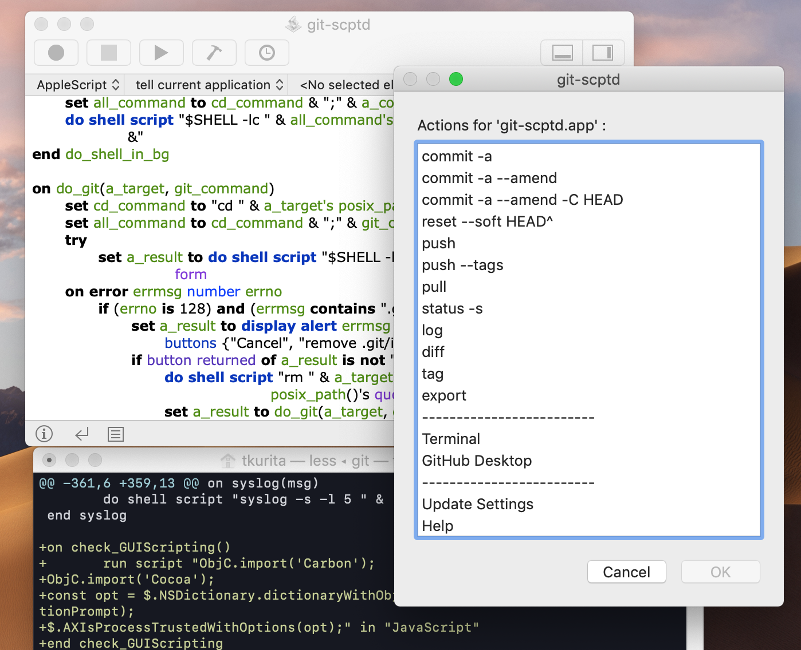

What's git-scptd ?
git-scptd is an utility to help manage AppleScript bundles in version control system using git. The features are follows.
- The repository will be created in the bundle.
- Setup the configuration of the repository to view changes of ".scpt" files using "git diff".
- Menus of frequentry used commnds is provided.
- Menus to launch applications woking with "git" is provided.
